Godot Căn Bản
Từ Zero Đến Game Đầu Tiên
Khóa nhập môn căn bản tổng quát cho người chưa từng lập trình, chưa từng chạm game engine: cài Godot → tư duy node/scene → GDScript như Python → input, animation, UI, tilemap, âm thanh → tự tay hoàn thành 2 game: "Né Quỷ" (đi theo tutorial kinh điển Dodge the Creeps của docs chính thức) và platformer mini "Hái Sao". Có mini-game chơi ngay trong trang và 🗂 Scene Lab luyện dựng cây node.
CH 1 Godot là gì & vì sao đáng học
Engine làm game mã nguồn mở — nhẹ, miễn phí, cực hợp người mới.
Godot là game engine mã nguồn mở 100% (giấy phép MIT): dùng thương mại thoải mái, không đóng phí, không bị chia doanh thu, không ràng buộc cửa hàng nào. Làm được cả game 2D lẫn 3D — và 2D là điểm rất mạnh của Godot.
Vì sao người mới nên chọn Godot?
| Godot | Unity (để so sánh) | |
|---|---|---|
| Giá | Miễn phí hoàn toàn (MIT) | Cá nhân miễn phí, có điều kiện doanh thu |
| Dung lượng | ~100MB, 1 file chạy thẳng, không cần cài | Vài GB + cài đặt + account |
| Ngôn ngữ | GDScript (giống Python — dễ cho người mới) | C# (phải cài .NET) |
| 2D | 2D "thật" — pixel là pixel | 2D dựng trên 3D |
| Máy yếu | Chạy mượt máy cũ | Cần cấu hình khá |
Cài đặt — 3 phút
- Vào godotengine.org/download, tải bản Godot 4.x Standard (GDScript) cho hệ điều hành của bạn.
- Giải nén → chạy file executable. Xong — thật sự không cần cài đặt.
- Cửa sổ Project Manager hiện ra → New Project → đặt tên (vd
hoc-godot) → chọn thư mục → renderer chọn Compatibility (nhẹ, chạy mọi máy — nếu máy mạnh muốn bóng đổ đẹp thì Forward+) → Create & Edit.
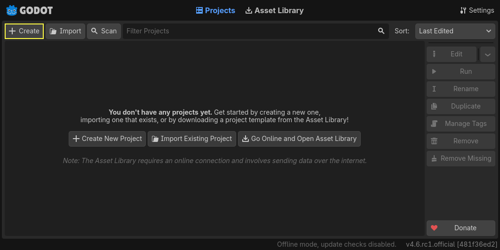
Chạy thử đầu tiên — "Hello Godot"
- Panel Scene (trái trên) → bấm 2D Scene → được root
Node2D. - Kéo file
icon.svg(có sẵn trong FileSystem) vào giữa viewport → Godot tự tạoSprite2D. - Bấm F6 (chạy scene hiện tại) → một cửa sổ game hiện ra với logo Godot. 🎉
Tạo project mới, thêm Sprite2D như trên, chạy F6. Rồi kéo sprite ra góc màn hình, lưu (Ctrl+S, đặt tên main.tscn), chạy lại — vị trí mới được ghi nhớ. Đó là file scene (.tscn) làm việc đấy.
CH 2 Node & Scene — viên gạch của mọi thứ
Hiểu node/scene là hiểu 80% Godot. Thật.
Trong Godot, mọi thứ là Node. Mỗi node chỉ làm đúng một việc: Sprite2D hiển thị ảnh, AudioStreamPlayer phát âm thanh, Timer đếm giờ, CollisionShape2D mô tả vùng va chạm... Node có thuộc tính (vị trí, màu, tốc độ — chỉnh trong Inspector) và có thể phát tín hiệu (chương 9).
Các node lồng nhau theo cây cha–con. Một cây như thế được lưu thành một Scene (tệp .tscn). Game của bạn là một cây lớn:
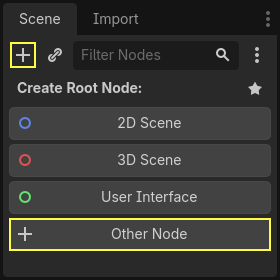
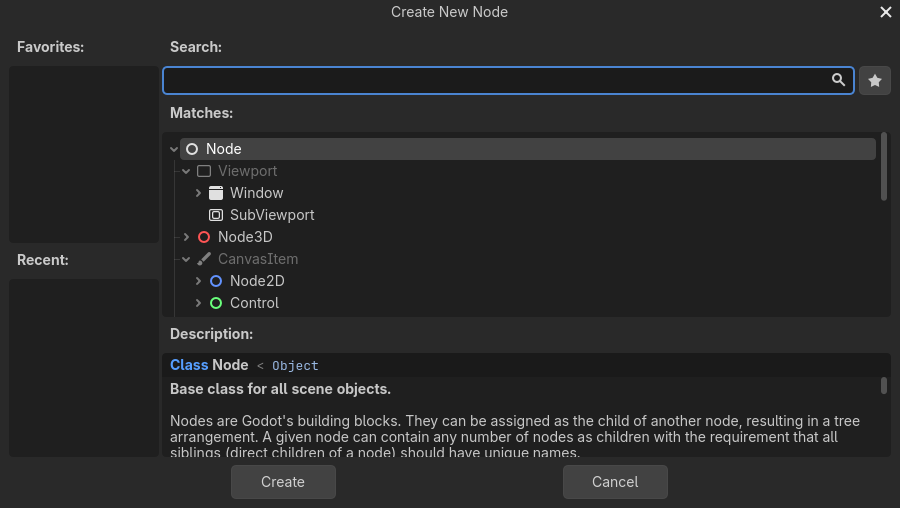
Main (Node) # scene chính — điều phối game ├── Player (Area2D) # instance của player.tscn │ ├── AnimatedSprite2D │ └── CollisionShape2D ├── MobTimer (Timer) ├── MobPath (Path2D) │ └── MobSpawnLocation (PathFollow2D) └── HUD (CanvasLayer) # instance của hud.tscn ├── ScoreLabel (Label) └── StartButton (Button)
Instance — "prefab" của Godot
Lưu Player thành player.tscn riêng, rồi nhúng (instance) nó vào Main bằng nút chuột phải → Instantiate Child Scene (hoặc nút ⛓ trên panel Scene). Sửa player.tscn → mọi bản nhúng tự cập nhật. Quy tắc: mọi thứ lặp lại (nhân vật, quỷ, đồng xu) đều deserve một scene riêng.
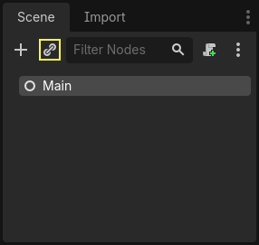
$TenNode trong code trỏ tới node con theo tên. Đổi tên node = code cũ bỏ tham chiếu. Ngay từ đầu: đặt tên rõ (ScoreLabel, không phải Label), không trùng tên ở cùng cấp.Area2D làm root, thêm con AnimatedSprite2D + CollisionShape2D → Kiểm tra. Làm hết 4 mục tiêu để thuộc lòng cấu trúc của cả game "Né Quỷ".Tạo scene player.tscn: root CharacterBody2D (nút + → search "CharacterBody2D") → thêm con Sprite2D (gán icon.svg) và CollisionShape2D (chọn Shape = New CircleShape2D, chỉnh bán kính đè ảnh). Lưu, F6 — chưa có gì động, nhưng khung nhân vật đã xong.
CH 3 Làm quen Editor
5 vùng màn hình + vài phím tắt là đủ để làm game.
Bản đồ editor
| Vùng | Vai trò |
|---|---|
| Scene (trái trên) | Cây node của scene đang mở; nút ➕ thêm node, ⛓ instance scene, 👁 hiện/ẩn |
| FileSystem (trái dưới) | Toàn bộ tệp dự án ở res:// — kéo thả để tổ chức folder |
| Viewport (giữa) | Nơi dàn cảnh 2D/3D; trên cùng là tab 2D / 3D / Script |
| Inspector (phải) | Mọi thuộc tính của node đang chọn — chỉnh không cần code |
| Dock dưới | Tab Node (Signals/Groups của node chọn), tab Debugger (xem lỗi + print), Audio, Animation |
Phím & thao tác Viewport 2D cần biết
| Phím | Chức năng |
|---|---|
| Space / chuột giữa + kéo | Pan (dịch khung nhìn) |
| Lăn chuột | Zoom |
| Q / W / E / R | Chọn / Di chuyển / Xoay / Phóng to node |
| Ctrl+S / Ctrl+Z | Lưu / Hoàn tác |
| F5 / F6 / F8 | Chạy game / Chạy scene / Dừng |
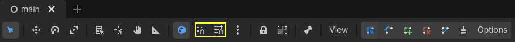
modulate), lật ảnh (flip_h), tốc độ... đều chỉnh ngay trong Inspector. Ô nào đã đổi có mũi tên ↩ — bấm để trả về mặc định. Từ chương 5, biến @export của bạn cũng hiện ở đây.Tổ chức thư mục từ ngày đầu
Trong FileSystem, tạo folder (chuột phải → New Folder) và kéo tệp vào:
res:// ├── assets/ # ảnh, âm thanh, font (chia nhỏ img/ audio/ nếu nhiều) ├── player/ # player.tscn + player.gd ├── mobs/ # mob.tscn + mob.gd ├── ui/ # hud.tscn + hud.gd └── main.tscn # scene chính
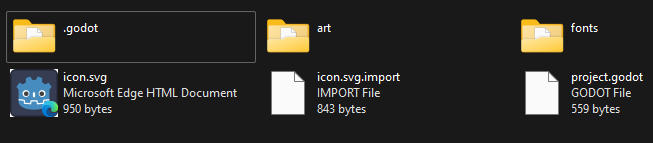
✓ Checklist chương 3
CH 4 Tư duy lập trình — dành cho người chưa từng code
15 phút "học cách nghĩ" trước khi học cú pháp — công sức bỏ ra ở đây x10 giá trị sau này.
Code là danh sách chỉ dẫn
Máy tính là một người làm việc rất nhanh nhưng rất đen: nó làm chính xác những gì bạn viết, theo thứ tự từ trên xuống, không đoán ý bạn. Công thức nấu mì gói:
# Nước sôi chưa? → nếu chưa, đợi # Thả mì vào nồi # Đếm 3 phút # Nếu muốn nhạt hơn → cho ít gia vị, ngược lại đủ gói # Vớt mì ra bát
Game cũng chỉ là một danh sách chỉ dẫn như thế, nhưng được chạy lặp lại ~60 lần mỗi giây: đọc phím người chơi → cập nhật vị trí → kiểm tra va chạm → vẽ màn hình. Vòng lặp đó gọi là game loop — và Godot đã lo phần lặp; bạn chỉ viết từng bước một (các hàm _process, _physics_process ở chương 8).
Lỗi là bạn, không phải địch
Người mới thường sợ dòng đỏ trong Output. Sự thật: lỗi là trợ giảng — nó nói chính xác chỗ nào sai. Ví dụ:
PARSE ERROR: Identifier "speeed" not declared in the current scope.
at line 5 in res://player/player.gd
Dịch: "Không biết speeed là cái gì, dòng 5". → Đánh máy sai speed. Bấm vào dòng lỗi, editor nhảy tới chỗ sai, sửa, chạy lại. Debug = in ra giấy: khi không hiểu vì sao, dùng print() để nhìn giá trị thật.
✓ Bạn đã sẵn sàng code khi...
CH 5 Biến, kiểu dữ liệu & toán tử
"Hộp đựng đồ có dán nhãn" — nền của mọi chương sau.
Script đầu tiên
Chọn root node của scene → nút ➕ kèm hình tờ giấy (hoặc chuột phải → Attach Script) → giữ mặc định → Godot tạo ten_node.gd và mở tab Script. Gõ thử:
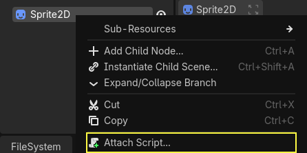
extends Node2D # script này gắn vào 1 node kiểu Node2D func _ready() -> void: # chạy đúng 1 LẦN khi scene sẵn sàng print("Xin chào Godot!") position.x += 100 # dịch node sang phải 100px lúc mở game
F6 → nhìn panel Output (dưới) thấy dòng chữ, node dịch đi 100px. Bạn vừa viết chương trình đầu tiên trong Godot!
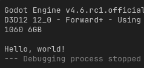
print() — người bạn debug trọn đời. (Ảnh: Godot Docs, CC BY 3.0)Biến — hộp đựng có dán nhãn
var ten := "Bình" # := tự suy kiểu (String) — khuyến nghị var diem := 0 # int var mau: float = 97.5 # khai báo kiểu tường minh const GRAVITY := 1500.0 # hằng số — không cho gán lại diem = diem + 10 # gán lại được @export var speed := 300.0 # HIỆN TRONG INSPECTOR — chỉnh không cần sửa code! @onready var sprite := $Sprite2D # tham chiếu node con (chờ scene sẵn sàng)
Kiểu dữ liệu thường gặp
| Kiểu | Chứa gì | Ví dụ |
|---|---|---|
int | Số nguyên | điểm 0, mạng 3 |
float | Số thập phân | tốc độ 2.5, máu 97.5 |
String | Chuỗi chữ | "Game Over" |
bool | Đúng/sai | true, false — còn sống? |
Vector2 | Cặp số (x, y) | vị trí, vận tốc — ngôi sao của game 2D (ch8) |
Array | Danh sách có thứ tự | danh sách quỷ (ch7) |
Dictionary | Tra cứu theo khóa | {"hp": 10} (ch7) |
Toán tử & chuỗi
- Số học:
+ - * /và%(chia lấy dư —7 % 2= 1). - So sánh:
== != < > <= >=— trả vềbool. - Nối chuỗi:
str("Điểm: ", diem)hoặc đẹp hơn:"Điểm: %d" % diem(%dsố nguyên,%.1f1 chữ số thập phân).
Ngẫu nhiên — gia vị của game
randi_range(1, 6) # xúc xắc 1-6 randf_range(0.8, 1.2) # số thực 0.8 → 1.2 (tốc độ quỷ ngẫu nhiên) randf() # 0.0 → 1.0 (xác suất 30%: if randf() < 0.3)
randomize() trước; Godot 4 tự xáo ngẫu nhiên mỗi lần chạy — gọi thẳng. Video/tutorial cũ mà thấy .instance(), get_node().connect("sig", self, "fn")… là cú pháp 3.x, không chạy trên 4.Trong _ready(): tạo biến a = số ngẫu nhiên 1→6, biến b = số ngẫu nhiên 1→6, in tổng theo dạng "Tổng xúc xắc: 7".
Xem đáp án
func _ready() -> void: var a := randi_range(1, 6) var b := randi_range(1, 6) print("Tổng xúc xắc: %d" % (a + b))
CH 6 Hàm & rẽ nhánh
Đóng gói "việc" thành tên gọi — và cho game biết đường rẽ.
Hàm = việc nhỏ có tên
func take_damage(amount: int, is_poison: bool) -> void: # amount, is_poison = THAM SỐ (đầu vào); -> void = không trả gì health -= amount * (2 if is_poison else 1) if health <= 0: die() elif health < 30: print("⚠️ Nguy hiểm!") else: print("Máu: ", health) func die() -> void: print("Game Over") func tinh_diem(so_sao: int, phan_thuong: int) -> int: return so_sao * 10 + phan_thuong # TRẢ VỀ giá trị
- Thụt lề bằng Tab tạo "khối" thuộc về hàm/if — sai một Tab là logic khác.
returntrả giá trị và thoát hàm ngay; hàm kiểuvoidkhông cần return.- Gọi:
take_damage(10, true)— gọi được cả trong hàm khác. - Rút gọn if/else 1 dòng:
x if dieu_kien else y.
Các hàm đặc biệt Godot tự gọi
| Hàm | Godot gọi khi nào | Dùng để |
|---|---|---|
_ready() | Node vào cây, 1 lần | Khởi tạo, lấy kích thước màn, hide() |
_process(delta) | Mỗi frame (~60 lần/s) | Di chuyển, đếm giờ, logic hiển thị |
_physics_process(delta) | Mỗi bước vật lý (cố định) | Di chuyển body, xử lý va chạm |
_input(event) / _unhandled_input(event) | Có sự kiện input | Bắt chuột/phím thô (ch10) |
Viết hàm xep_hang(diem: int) -> String: ≥ 90 → "S", ≥ 75 → "A", ≥ 50 → "B", còn lại "C". In thử với 5 giá trị.
Xem đáp án
func xep_hang(diem: int) -> String: if diem >= 90: return "S" elif diem >= 75: return "A" elif diem >= 50: return "B" return "C" # không cần else — chạy tới đây nghĩa là các trường hợp trên đều sai
CH 7 Mảng, Dictionary & vòng lặp
Quản lý "nhiều thứ": 100 con quỷ, bảng cấu hình, lưu game.
Array — danh sách có thứ tự
var quy := ["gai", "quỷ", "dơi"] print(quy.size()) # 3 print(quy[0]) # "gai" — đánh số từ 0! quy.append("sếp cuối") # thêm cuối quy.remove_at(0) # xóa phần tử 0 print(quy.pick_random()) # ngẫu nhiên 1 con — dùng hoài!
Vòng lặp
for q in quy: # duyệt từng phần tử print("Gặp: ", q) for i in range(3): # i = 0, 1, 2 spawn_coin(i) var hp := 5 while hp > 0: # lặp CHỈ KHI điều kiện còn đúng hp -= 1 print("Còn ", hp, " tim")
while mà điều kiện chẳng bao giờ sai → game đứng im (treo). Nếu lỡ chạy — F8 dừng, kiểm tra biến trong điều kiện có thay đổi không.Dictionary — tra cứu theo khóa
var config := {"speed": 300, "color": "xanh"} config["speed"] = 350 # ghi print(config["speed"]) # đọc: 350 for k in config: # duyệt khóa print(k, "=", config[k]) # Save game là 1 Dictionary: {"best": 120, "level": 3}
Cho var diem := [7, 9, 4, 10, 6]. Dùng vòng lặp in ra từng điểm và đếm có bao nhiêu điểm ≥ 7 (đậu).
Xem đáp án
var dau := 0 for d in diem: print("Điểm: ", d) if d >= 7: dau += 1 print("Đậu: %d/5" % dau)
CH 8 Vòng lặp game: delta & Vector2
Hai khái niệm "người mới hay sai nhất" — nắm chắc là code game ngon.
delta — thời gian của một frame
Máy A chạy 30fps, máy B 144fps. Nếu mỗi frame bạn cộng vị trí +5px thì máy B nhân vật nhanh gấp ~5 lần máy A! Giải pháp: nhân với delta (số giây frame trước kéo dài) — tốc độ trở thành px/giây, như nhau mọi máy:
extends Node2D @export var speed := 300.0 # px/giây func _process(delta: float) -> void: position += Vector2.RIGHT * speed * delta # ĐÚNG: luôn 300px/s # position += Vector2.RIGHT * speed # SAI: nhanh chậm tùy máy!
_process(delta); di chuyển physics body & va chạm → _physics_process(delta) (timestep cố định 60Hz của engine).Vector2 — kiểu "quốc dân" của game 2D
Vị trí là Vector2, vận tốc là Vector2, hướng là Vector2. Phép tính trực tiếp như số thường:
| Công thức | Ý nghĩa |
|---|---|
Vector2(3, 4) | Điểm/vector (x=3, y=4). Trục y hướng XUỐNG trong 2D! |
a + b, a * 2 | Cộng/trừ từng thành phần; nhân độ dài (tăng tốc gấp đôi) |
v.length() | Độ dài — "quãng đường" |
v.normalized() | Cùng hướng nhưng độ dài = 1 — chống đi chéo nhanh hơn |
v.rotated(a) | Xoay vector qua góc a (radian) |
v.angle() | Góc của vector |
Vector2.from_angle(a) | Tạo vector đơn vị theo góc (đạn bắn theo rotation) |
Vector2.ZERO / UP / DOWN / LEFT / RIGHT | Hằng có sẵn; TAU = 2π = cả vòng tròn |
# Đạn bay theo hướng nòng súng: position += Vector2.from_angle(rotation) * speed * delta # Chạy về phía người chơi: var huong := (player.position - position).normalized() position += huong * speed * delta # Kéo về vị trí ban đầu mượt dần (lerp): position = position.lerp(diem_dich, 5.0 * delta)
Sprite bay theo đường tròn: trong _process, tăng var t += delta rồi đặt position = Vector2(200, 150) + Vector2.from_angle(t) * 100. Chạy F6 và ngắm nghía.
Vì sao chạy được?
from_angle(t) xoay liên tục theo thời gian t → cộng vào tâm (200,150) với bán kính 100 → chuyển động tròn đều, đúng 1 vòng mỗi TAU ≈ 6.28 giây (đổi t * 2.0 để nhanh gấp đôi).CH 9 Signals — node nói chuyện với nhau
Cơ chế "phát – nghe" giúp game không rối thành mớ spaghetti.
Vấn đề signals giải quyết
Mob chạm Player → cần: ẩn player, nổ particle, dừng timer, hiện Game Over. Nếu Mob phải tự biết và gọi cả 4 việc đó, mọi thứ dính chặt nhau. Signal đảo chiều: Mob chỉ hét lên "tui chạm người rồi!" — ai cần thì lắng nghe và tự xử lý (observer pattern).
Dùng signal có sẵn
# Cách 1 — bằng Editor (khuyên dùng khi mới học): # Chọn node → dock dưới tab Node → Signals → đúp chuột signal (vd timeout) # → chọn node nhận → Godot TỰ SINH hàm _on_ten_node_timeout() cho bạn # Cách 2 — bằng code: func _ready() -> void: $StartButton.pressed.connect(_on_start_pressed) # Godot 4: connect(Callable) func _on_start_pressed() -> void: print("Bấm Start!")
Signal thường gặp: Button.pressed · Timer.timeout · Area2D.body_entered(body) / body_exited · AnimatedSprite2D.animation_finished · VisibleOnScreenNotifier2D.screen_exited.
Tự khai báo signal
extends Area2D signal hit # khai báo ở đầu script func _on_body_entered(_body): # quỷ đâm vào hit.emit() # PHÁT tín hiệu — không quan tâm ai nghe
Bên Main: kết nối hit → hàm game_over(). Player không cần biết Main là gì — bố cục gọn rối đều được.
Groups — "địa chỉ nhóm" & Timer
# Node dock → Groups → gán node vào nhóm "mobs" (hoặc add_to_group("mobs")) get_tree().call_group("mobs", "queue_free") # xóa SẠCH mọi quỷ if body.is_in_group("player"): ... # hỏi thành viên nhóm # Chờ 1 giây trong code (không cần Timer node): await get_tree().create_timer(1.0).timeout # Timer node: wait_time=1.0, one_shot, autostart → signal timeout
Tạo scene: Node2D + Button + Label. Kết nối pressed của Button (bằng Editor) sao cho mỗi lần bấm, Label hiện số lần bấm tăng dần.
Gợi ý code
var count := 0 func _on_button_pressed() -> void: count += 1 $Label.text = "Bấm %d lần" % count
CH 10 Input: phím, chuột, cảm ứng
"Action" thay phím cứng — code 1 lần, chơi được mọi thiết bị.
Bước 1 — định nghĩa Action trong Input Map
Project → Project Settings → Input Map. Thêm action move_left, move_right, move_up, move_down, jump → bấm + gán phím (mũi tên, WASD, thậm chí gamepad — 1 action nhận nhiều phím). Godot có sẵn bộ ui_left/ui_accept... cho UI; game của bạn nên có action riêng.
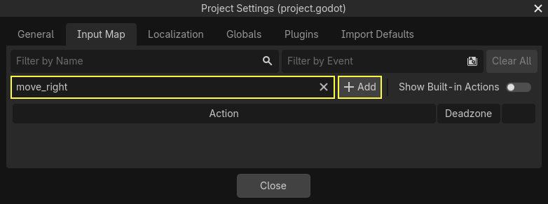
move_left… rồi bấm + để gán phím. (Ảnh: Godot Docs, CC BY 3.0)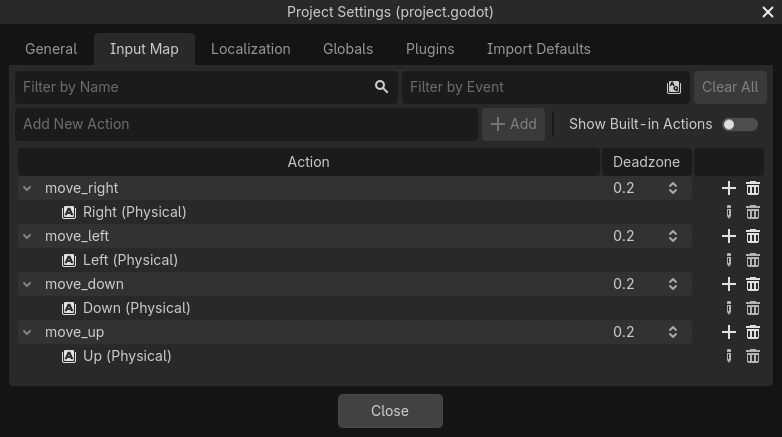
KEY_A cho gameplay.Bước 2 — đọc action trong code
# 4 hướng thành Vector2 sẵn (đã chuẩn hóa) — gọn nhất cho top-down: var dir := Input.get_vector("move_left", "move_right", "move_up", "move_down") # Trục 1 chiều (trái = -1, phải = 1): var x := Input.get_axis("move_left", "move_right") Input.is_action_pressed("move_right") # đang GIỮ Input.is_action_just_pressed("jump") # VỪA bấm (1 frame) — nhảy/bắn
just_pressed (bắn 1 phát mỗi lần bấm). Dùng pressed cho nhảy sẽ nhảy liên tục từng frame khi giữ phím.Chuột & cảm ứng
var pos := get_global_mouse_position() # world position dưới con trỏ func _unhandled_input(event): # bắt sự kiện thô if event is InputEventMouseButton and event.pressed: print("Bấm tại ", event.position)
Mobile: Project Settings → Emulate Mouse From Touch (mặc định bật) — code chuột chạy luôn với ngón tay. Nút ảo: TouchScreenButton gắn action như thường. Kéo node: theo dõi InputEventScreenDrag và tính delta.
Định nghĩa 4 action di chuyển + gán WASD/mũi tên. Sprite chạy theo get_vector với speed 300 (nhân delta!). Bonus: giữ Shift chạy nhanh gấp đôi.
Gợi ý
func _process(delta): var dir := Input.get_vector("move_left", "move_right", "move_up", "move_down") var s := speed * (2.0 if Input.is_key_pressed(KEY_SHIFT) else 1.0) position += dir * s * delta
CH 11 Sprite & Animation
Từ ảnh tĩnh → nhân vật biết chạy, biết nổ, biết nhấp nháy.
Sprite2D — hiển thị ảnh
- Thả ảnh PNG/WebP/SVG vào FileSystem (Godot tự import) → kéo vào
texturecủa Sprite2D. flip_h / flip_v: lật — nhân vật quay trái/phải chỉ cần 1 bộ ảnh.modulate: nhuộm màu —modulate = Color.REDlàm flash đỏ khi trúng đòn; giảm alpha (modulate:a) để mờ dần.region_enabled+ Region: cắt 1 ô từ ảnh lưới lớn (spritesheet).
AnimatedSprite2D — animation theo frame
- Thêm
AnimatedSprite2D→ Inspector → Sprite Frames → New SpriteFrames → bấm mở panel Animation (dưới). - Thêm animation (vd
walk,up) → kéo dàn frame ảnh vào thanh frame (hoặc Add frames from sprite sheet). - Chỉnh FPS; bấm ▶ xem thử ngay trong editor.
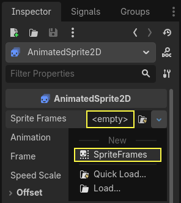
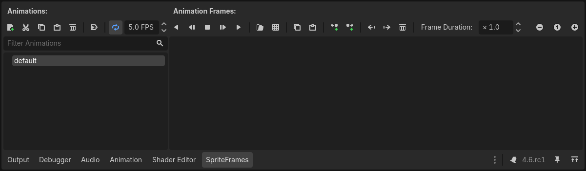
$AnimatedSprite2D.play() # play animation đang chọn $AnimatedSprite2D.play("walk") # play cụ thể $AnimatedSprite2D.stop() $AnimatedSprite2D.flip_h = velocity.x < 0 # lật theo hướng chạy $AnimatedSprite2D.sprite_frames.get_animation_names() # list animation
AnimationPlayer — keyframe mọi thứ
Khi cần animation thuộc tính (đổi màu, chạy chữ, mở cửa): thêm AnimationPlayer → tab Animation → New → bấm biểu tượng chìa khóa cạnh thuộc tính trong Inspector để chốt keyframe tại thời điểm con chạy. Code: $AnimationPlayer.play("ten").
Tween — hiệu ứng 1 dòng code
# Mờ dần rồi xóa node (0.5 giây): var tw := create_tween() tw.tween_property($Sprite2D, "modulate:a", 0.0, 0.5) tw.tween_callback($Sprite2D.queue_free) # Nảy lên kiểu bóng (scale + TRANS_BOUNCE): create_tween().tween_property(self, "scale", Vector2(1.3, 0.7), 0.15)\ .set_trans(Tween.TRANS_BOUNCE).set_loops(3)
Làm coin xoay + nhấp nhô: Sprite2D hình tròn, trong _ready tạo tween lặp: xoay 360° trong 1s + scale lên 1.2 rồi về 1.0 (dùng set_loops() và tween_property nối tiếp).
CH 12 Va chạm 2D cơ bản
Bốn loại "thân" — biết chọn đúng là hết 90% bài toán va chạm.
4 loại body
| Node | Ai điều khiển | Dùng cho |
|---|---|---|
StaticBody2D | Không ai — bất động | Tường, sàn, địa hình |
CharacterBody2D | Bạn (code velocity) | Nhân vật, quỷ kiểu platformer |
RigidBody2D | Engine vật lý (lực, trọng lực) | Thùng rơi, bóng nảy — xem khóa 2D Physics |
Area2D | Không chặn — chỉ cảm biến | Hút coin, vùng kích hoạt, đạn, "Né Quỷ" player |
Mỗi body cần một con CollisionShape2D: chọn hình gần đúng và đơn giản nhất — nhân vật = capsule, đạn/coin = circle, tường = rectangle. Vẽ đè lên sprite nhưng vô hình khi chạy (xem shapes khi debug bằng nút ô vuông trong toolbar).
Area2D — "cảm biến" nhiều nhất dùng
extends Area2D func _on_area_2d_body_entered(body): # connect signal body_entered if body.is_in_group("player"): body.add_score(1) queue_free() # coin biến mất
Signals chính: body_entered(body) / body_exited (body = Character/RigidBody chạm vùng) và area_entered(area) (Area2D chạm Area2D).
Layers & Masks — 2 con số nhỏ, gọn game
- Layer = "tôi thuộc lớp nào" (định danh); Mask = "tôi muốn phát hiện/va với lớp nào".
- Game nhỏ: để mặc định hết layer 1 — mọi thứ va mọi thứ, ổn.
- Khi cần: VD 1=world, 2=player, 3=enemy, 4=player_bullet → bullet chỉ mask 3 (không đâm nhau), enemy mask 1+4.
- Lưu ý "Né Quỷ": quỷ bỏ tick mask 1 → không dính vào nhau khi bay ngang.
CH 13 CharacterBody2D — platformer movement
Template di chuyển kinh điển: chạy, rơi, nhảy.
extends CharacterBody2D @export var speed := 300.0 @export var jump_force := -400.0 # âm = hướng LÊN (trục y hướng xuống!) @export var gravity := 1500.0 func _physics_process(delta: float) -> void: # 1. Ngang: đọc input velocity.x = Input.get_axis("move_left", "move_right") * speed # 2. Nhảy if is_on_floor() and Input.is_action_just_pressed("jump"): velocity.y = jump_force # 3. Trọng lực tự cộng velocity.y += gravity * delta # 4. Di chuyển + tự trượt tường/sàn move_and_slide()
- Godot 4: gán vào thuộc tính
velocitysẵn có rồi gọimove_and_slide()không tham số. is_on_floor() / is_on_wall() / is_on_ceiling()— chỉ đúng sau khi gọi move_and_slide.- Sàn = StaticBody2D/TileMap có collision; nhân vật tự đứng, tự trượt dọc tường khi lao vào.
Game top-down thì sao?
Không trọng lực: bỏ bước 2–3, velocity = dir * speed với dir từ Input.get_vector. Hoặc như "Né Quỷ" (player là Area2D): position += velocity * delta trong _process.
is_on_floor() cuối); jump buffer: nhớ phím nhảy ~0.1s trước khi chạm sàn; rơi nhanh hơn bay: nhân gravity 1.5 khi velocity.y > 0. 3 dòng này nâng cảm giác platformer rõ rệt.Thêm nhảy đôi: cho phép nhảy 1 lần nữa khi đang trên không (đếm số lần nhảy, reset khi chạm sàn).
Gợi ý
var jumps_left := 2 # trong _physics_process: if is_on_floor(): jumps_left = 2 if Input.is_action_just_pressed("jump") and jumps_left > 0: velocity.y = jump_force jumps_left -= 1
CH 14 TileMap & Camera2D
Vẽ map cả buổi trong 10 phút — và camera biết bám diễn viên.
TileMapLayer (Godot 4.3+)
- Thêm node
TileMapLayer→ Inspector → Tile Set → New TileSet. - Kéo spritesheet (ảnh lưới ô vuông, vd 16×16/32×32) vào vùng Tile Set → chỉnh Selection size đúng cỡ ô → tự cắt.
- Vẽ trong viewport: chuột trái vẽ, chuột phải (hoặc B) xóa, Shift+chuột trái hút mẫu ô.
- Va chạm: TileSet → Physics Layers → Add Layer → chọn tab Physics trong panel TileMap → quét ô nào đặc thì ô đó thành tường.
TileMap chứa nhiều layer bên trong; Godot 4.3 tách thành từng node TileMapLayer riêng — mỗi node một việc (chuẩn Godot). Cách dùng gần giống nhau; khóa này dùng TileMapLayer.Mẹo tổ chức: 2 TileMapLayer — Background (cỏ, trang trí — không physics) đặt dưới, Ground (đất, gai — có physics) đặt trên. Thứ tự node trong cây = thứ tự vẽ.
Camera2D — khung biết đi theo
| Thuộc tính | Tác dụng |
|---|---|
| (làm con của Player) | Tự bám theo nhân vật — cách phổ biến nhất |
position_smoothing_enabled + speed | Bám mượt như dây chun thay vì cứng đờ |
limit_left/right/top/bottom | Khoá camera trong mép map — không lộ ra ngoài nền |
zoom | Phóng to/nhỏ (zoom = Vector2(2,2) = nhìn gần hơn) |
Lưu ý Godot 4: camera tự động active — không cần nút Current như Godot 3.
Vẽ 1 map nhỏ (sàn + vài bậc + 2 tường), đặt Player (CH13) + Camera2D con của Player. Chạy: nhảy lên bậc, camera bám theo, không thấy ra ngoài map (đặt limit khớp kích thước map).
CH 15 UI, HUD & âm thanh
Điểm số, nút Start, nhạc nền — phần khiến game "thật" hẳn ra.
Node UI đều là Control
| Node | Dùng cho |
|---|---|
Label | Chữ: điểm, thông báo |
Button | Nút — signal pressed (ch9) |
TextureRect / ColorRect | Ảnh / khối màu nền UI |
ProgressBar | Than máu / nạp skill |
VBoxContainer / HBoxContainer | Tự xếp dọc / ngang các con |
CanvasLayer | Lớp vẽ — UI đặt trong này mới không bị camera kéo chạy |
Anchor preset (menu neo hiện ra khi chọn node Control, đầu Inspector): neo về Center Top / Center / Center Bottom… để UI tự co giãn theo mọi kích thước màn hình. Đổi font trong Theme Overrides → Font (kéo file .ttf vào, chỉnh Font Size) — dùng font pixel cho game retro đẹp ngay.
Âm thanh
AudioStreamPlayer— nhạc nền & âm "không định vị": loop bật trong tab Import (Loop Mode) +autoplay.AudioStreamPlayer2D— sfx có vị trí: càng xa nguồn nghe càng nhỏ.- Định dạng: .ogg cho nhạc (nhẹ, loop tốt), .wav cho sfx ngắn (nhanh).
- Âm lượng:
volume_db; tách bus Music/SFX trong panel Audio → chỉnh riêng từng loại.
$Music.play() # phát nhạc (autoplay thì khỏi gọi) $DeathSound.play() # tiếng quỷ đâm trúng $Music.stop() # tắt khi game over
✓ Checklist hết L2 — sẵn sàng capstone khi...
CH 16 "Né Quỷ" #1 — Scene Player
Game A đi theo tutorial kinh điển "Dodge the Creeps" của docs Godot — bắt đầu từ nhân vật.
ne-quy, action move_left/right/up/down gán mũi tên + WASD.Dựng scene
Player.tscn: root Area2D (đặt tên Player) → con: AnimatedSprite2D + CollisionShape2D (capsule hoặc circle đè vừa ảnh). Tạo animations walk (dãy grey_walk*) và up (grey_up*) trong SpriteFrames.
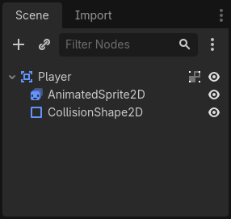
Area2D + AnimatedSprite2D + CollisionShape2D. (Ảnh: Godot Docs, CC BY 3.0)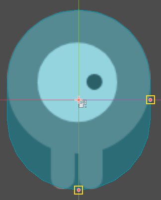
CollisionShape2D (capsule) đè vừa sprite — viền đỏ chỉ hiện trong editor. (Ảnh: Godot Docs, CC BY 3.0)player.gd — nguyên bản theo docs
extends Area2D signal hit @export var speed = 400 var screen_size func _ready(): screen_size = get_viewport_rect().size # kích thước màn hình game hide() # ẩn tới khi bấm Start func _process(delta): var velocity = Vector2.ZERO if Input.is_action_pressed("move_right"): velocity.x += 1 if Input.is_action_pressed("move_left"): velocity.x -= 1 if Input.is_action_pressed("move_down"): velocity.y += 1 if Input.is_action_pressed("move_up"): velocity.y -= 1 if velocity.length() > 0: # đang di chuyển velocity = velocity.normalized() * speed # chéo không nhanh hơn $AnimatedSprite2D.play() else: $AnimatedSprite2D.stop() position += velocity * delta position = position.clamp(Vector2.ZERO, screen_size) # khỏi ra khỏi màn if velocity.x != 0: # chọn animation theo hướng $AnimatedSprite2D.animation = "walk" $AnimatedSprite2D.flip_h = velocity.x < 0 # gán bool 1 dòng elif velocity.y != 0: $AnimatedSprite2D.animation = "up" $AnimatedSprite2D.flip_v = velocity.y > 0 func start(pos): # gọi mỗi ván mới position = pos show() $CollisionShape2D.set_deferred("disabled", false) func _on_body_entered(_body): # quỷ đâm vào — connect body_entered hide() hit.emit() $CollisionShape2D.set_deferred("disabled", true)
set_deferred = "để hết bước này hẵng đổi". Cũng nhờ disable mà hit không phát 2 lần.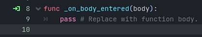
body_entered(body) → chọn Player → Godot tự sinh hàm _on_body_entered. (Ảnh: Godot Docs, CC BY 3.0)Trong player.gd, thay 4 dòng is_action_pressed bằng 1 dòng Input.get_vector(...) — hành vi giữ nguyên (đây chính là khác biệt style, hai cách đều đúng; docs chọn cách dài cho người mới dễ theo từng dòng).
CH 17 "Né Quỷ" #2 — Mob & spawn ngẫu nhiên
Quỷ bay từ viền màn hình vào trong — bằng Path2D + một chút lượng giác.
Mob.tscn
Root RigidBody2D (đặt tên Mob) → con AnimatedSprite2D (3 animation: fly/swim/walk, speed 3) + CollisionShape2D (capsule xoay 90°) + VisibleOnScreenNotifier2D.
- Inspector của Mob: Gravity Scale = 0 (quỷ không rơi!), Collision → Mask bỏ tick ô 1 → quỷ không dính vào nhau.
- Group: Node dock → Groups → thêm nhóm
mobs— để game over xóa sạch.
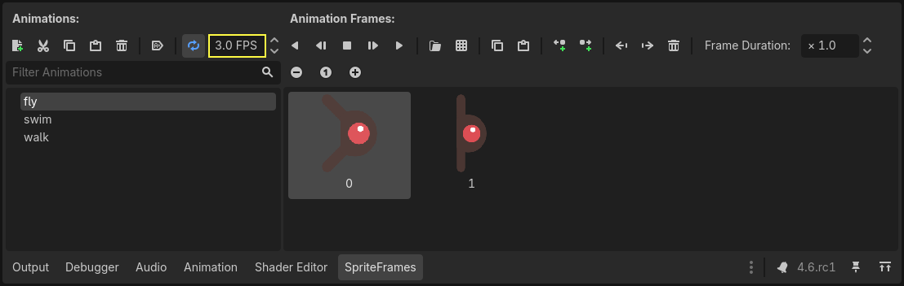
fly / swim / walk — mỗi loại 2 frame. (Ảnh: Godot Docs, CC BY 3.0)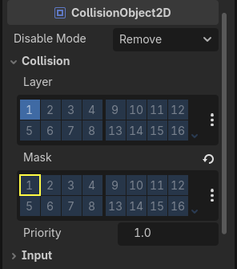
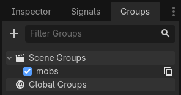
mobs để xóa hàng loạt bằng call_group. (Ảnh: Godot Docs, CC BY 3.0)extends RigidBody2D func _ready(): var mob_types = $AnimatedSprite2D.sprite_frames.get_animation_names() $AnimatedSprite2D.animation = mob_types.pick_random() # mặt ngẫu nhiên! $AnimatedSprite2D.play() func _on_visible_on_screen_notifier_2d_screen_exited(): # connect signal queue_free() # bay khỏi màn → xóa — không để quỷ chất đống vô tội vạ
Main.tscn — sân khấu
Root Node (đặt tên Main) → thêm: instance Player · MobTimer (Wait 0.5) · ScoreTimer (Wait 1) · StartTimer (Wait 2, One Shot ✓) · StartPosition (Marker2D, đặt giữa dưới) · MobPath (Path2D).
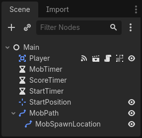
Vẽ MobPath: chọn MobPath → thêm Curve2D trong Inspector → bấm các điểm tạo hình chữ nhật khép kín bao quanh viewport, theo chiều kim đồng hồ (con là PathFollow2D đặt tên MobSpawnLocation, bật Rotates). Path2D là "đường ray" — quỷ nhảy lên ray ở điểm bất kỳ rồi lao vào giữa.
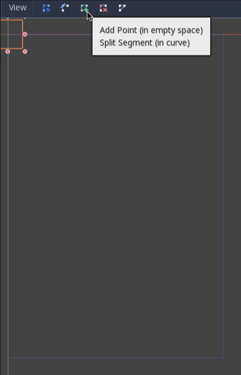
Spawn — trái tim của game
extends Node @export var mob_scene: PackedScene # kéo mob.tscn vào ô này trong Inspector! func _on_mob_timer_timeout(): var mob = mob_scene.instantiate() # đúc 1 con quỷ từ khuôn var mob_spawn_location = get_node("MobPath/MobSpawnLocation") mob_spawn_location.progress_ratio = randf() # vị trí ngẫu nhiên 0→1 trên đường mob.position = mob_spawn_location.position var direction = mob_spawn_location.rotation + PI / 2 # vuông góc đường ray direction += randf_range(-PI / 4, PI / 4) # lệch tối đa ±45° mob.rotation = direction var velocity = Vector2(randf_range(150.0, 250.0), 0.0) mob.linear_velocity = velocity.rotated(direction) # tốc độ 150-250, hướng vừa tính add_child(mob) # thả quỷ vào game
CH 18 "Né Quỷ" #3 — HUD, điểm & hoàn thiện
Nối mọi mảnh lại: nút Start, điểm mỗi giây, Game Over, nhạc + nổ.
HUD.tscn
Root CanvasLayer (tên HUD) → con: ScoreLabel (Label, anchor Center Top) · Message (Label, Autowrap = Word) · StartButton (Button) · MessageTimer (Timer 2s, One Shot). Font: Theme Overrides → kéo Xolonium-Regular.ttf (có trong assets).
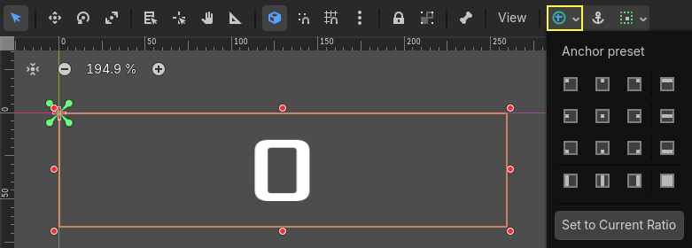
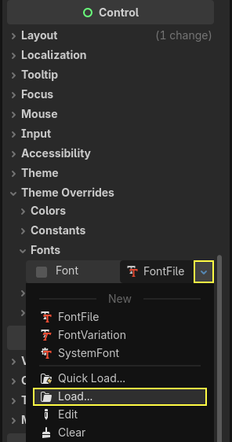
.ttf vào, chỉnh Font Size — HUD chữ to dễ đọc. (Ảnh: Godot Docs, CC BY 3.0)extends CanvasLayer signal start_game # tự chế: báo Main "người chơi bấm Start" func show_message(text): $Message.text = text $Message.show() $MessageTimer.start() func show_game_over(): show_message("Game Over") await $MessageTimer.timeout # chờ 2s — code tuyến tính như đọc truyện $Message.text = "Né Quỷ!" $Message.show() await get_tree().create_timer(1.0).timeout # chờ thêm 1s $StartButton.show() func update_score(score): $ScoreLabel.text = str(score) func _on_start_button_pressed(): # connect pressed → ẩn nút + phát tín hiệu $StartButton.hide() start_game.emit() func _on_message_timer_timeout(): $Message.hide()
main.gd — dàn đạo
var score func game_over(): # connect từ signal hit của Player $ScoreTimer.stop() $MobTimer.stop() $HUD.show_game_over() $Music.stop() $DeathSound.play() func new_game(): # connect từ signal start_game của HUD score = 0 $Player.start($StartPosition.position) $MobTimer.start() $ScoreTimer.start() $HUD.update_score(score) $HUD.show_message("Sẵn sàng...") await $StartTimer.timeout # đếm ngược 2s tạo kịch tính $HUD.update_score(score) $Music.play() func _on_score_timer_timeout(): score += 1 # sống sót thêm 1 giây = +1 điểm $HUD.update_score(score)
Nối dây — bảng signal của cả game
| Signal (từ → ) | Gọi hàm ở |
|---|---|
StartButton.pressed → HUD | _on_start_button_pressed() → phát start_game |
HUD.start_game → Main | new_game() |
Player.hit → Main | game_over() |
Player.body_entered → Player | _on_body_entered() (ch16) |
MobTimer/ScoreTimer.timeout → Main | _on_mob_timer_timeout() / _on_score_timer_timeout() |
Mob.screen_exited → Mob | queue_free() (ch17) |
Polish — 10 phút đáng giá nhất
- Thêm
Music(AudioStreamPlayer, autoplay, nhạc loop .ogg — assets mẫu có sẵn) +DeathSoundvào Main. - Nổ khi chết: Player thêm con
GPUParticles2D(One Shot ✓, Emitting ✗; particles.png làm texture) — code:$GPUParticles2D.emitting = truetrong_on_body_entered, ẩn player, và xóa particle node sau 1s bằng SceneTree timer. - Đặt
main.tscnlàm scene chính (Project Settings → Run → Main Scene) → F5 chơi game hoàn chỉnh đầu tiên của bạn! 🏆
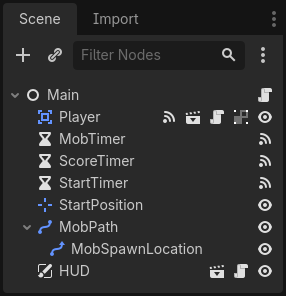
CH 19 "Hái Sao" — platformer mini
Game B: tự thiết kế (không theo docs) — tổng hợp toàn bộ L2.
Đề bài
Một màn platformer: chạy + nhảy (CH13), map TileMapLayer (CH14), camera mượt, 10 đồng sao (Area2D — CH12), 2 quỷ đi tuần, chạm quỷ = về checkpoint, đủ sao → mở cổng đích → thắng. HUD đếm sao + kỷ lục (CH15).
Cấu trúc scene
Main (Node2D) ├── Background (TileMapLayer — không physics) ├── Ground (TileMapLayer — có physics) ├── Player (CharacterBody2D) + Camera2D ├── Stars (Node2D) ── 10 × instance star.tscn │ └── Star (Area2D + Sprite2D + CollisionShape2D + tween xoay) ├── Enemies (Node2D) ── 2 × instance enemy.tscn │ └── Enemy (CharacterBody2D + AnimatedSprite2D + CollisionShape2D) ├── Checkpoints (Node2D) ── Marker2D vài điểm ├── Goal (Area2D — cửa thoát, khóa tới khi đủ sao) └── HUD (CanvasLayer + Label "⭐ 0/10" + Label kỷ lục)
3 mảnh code chính
# star.gd extends Area2D func _ready(): create_tween().set_loops().tween_property(self, "rotation", TAU, 1.5) func _on_body_entered(body): if body.is_in_group("player"): body.collect_star() # HUD cập nhật; đủ 10 → mở Goal queue_free() # enemy.gd — đi tuần giữa 2 điểm A↔B extends CharacterBody2D @export var speed := 80.0 @export var diem_a := Vector2(100, 0) # chỉnh trong Inspector cho từng con @export var diem_b := Vector2(400, 0) var den_a := true func _physics_process(delta): var dich = global_position.lerp(diem_a if den_a else diem_b, 1 - pow(0.001, delta)) velocity = (dich - global_position) * speed / 50.0 move_and_slide() $AnimatedSprite2D.flip_h = velocity.x < 0
Chạm quỷ: trong Player, connect body_entered từ Area2D overlay (hoặc dùng move_and_slide() rồi kiểm tra get_slide_collision()) → teleport về checkpoint gần nhất + mất 1 tim. Đơn giản hơn: quỷ là Area2D, body_entered là đủ.
Lưu kỷ lục — lần đầu làm game "nhớ" người chơi
const SAVE_PATH = "user://haisao.json" # user:// = thư mục riêng của game (an toàn) func save_best(thoi_gian: float) -> void: var f = FileAccess.open(SAVE_PATH, FileAccess.WRITE) f.store_line(str({"best": thoi_gian})) # Dictionary → text func load_best() -> float: if not FileAccess.file_exists(SAVE_PATH): return 0.0 var text = FileAccess.open(SAVE_PATH, FileAccess.READ).get_line() return str_to_var(text)["best"] # text → Dictionary
✓ Checklist "Hái Sao"
CH 20 Bản đồ phía trước
Bạn đã có nền — giờ là thời điểm chọn hướng sâu.
3D — quen mà lạ
Tư duy node giữ nguyên, chỉ đổi bộ node: Node3D, MeshInstance3D (hình khối), Camera3D, DirectionalLight3D (nắng), WorldEnvironment (trời/sương). Docs có tiếp theo Your first 3D game (game bắn xe tăng đơn giản) — làm khi đã vững 2D.
Chia sẻ game cho bạn bè — Export
- Project → Export → Add… chọn nền tảng: Windows / Linux / macOS / Web (chạy trong trình duyệt).
- Lần đầu: bấm Download and Install Export Templates (~ vài trăm MB, một lần duy nhất).
- Bấm Export Project → được file
.exe/.zipweb — gửi trực tiếp cho bạn bè chơi. - Xuất Android/iOS có quảng cáo: nằm ở khóa Godot 2D Physics (L4) trong repo này.
Lộ trình trong repo này
| Bước | File | Học gì |
|---|---|---|
| 1 — bạn đang ở đây | khoa-hoc-godot-can-ban | Nền Godot + GDScript + 2 game đầu |
| 2 — vật lý chuyên sâu | khoa-hoc-godot-2d-physics | RigidBody, lực, joints, Slinky, xuất bản mobile + ads |
| 3 — project RPG lớn | godot-hackslash-rpg-guide | Hoàn thiện game isometric hack & slash |
| 4 — nghĩ như designer | khoa-hoc-game-design | Thiết kế mức, juice, cân bằng, cảm xúc người chơi |
Nguồn ngoài đáng theo
- Godot Docs — Step by Step, GDScript basics, Style Guide (viết code đẹp).
- GDQuest — Learn GDScript From Zero — luyện code thuần 27 bài.
- Clear Code — Ultimate Introduction to Godot 4 — 11+ tiếng, gần như "đại học Godot" miễn phí.
- Brackeys Godot playlist — video ngắn, sản xuất đẹp.
🎮 Mini-game "Né Quỷ"
Cùng luật với capstone CH16–18: di chuyển, né quỷ tràn từ rìa, sống sót càng lâu điểm càng cao.
🕹 Né Quỷ — bản web thu nhỏ
Phím mũi tên / WASD để di chuyển · trên điện thoại: quét ngón tay. Quỷ 🔴 xuất hiện từ rìa, càng về sau càng đông. Bấm vào màn hình để bắt đầu.
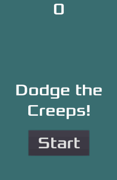
💡 Đây chính là logic bạn code bằng Godot ở CH16–18 (spawn theo hướng ngẫu nhiên vào giữa, tốc độ tăng dần, điểm mỗi giây) — viết lại bằng JavaScript để chạy ngay trong trang.
❓ Quiz — 12 câu
Chọn đáp án rồi bấm Kiểm tra. Sai cũng được — đọc giải thích là học thêm.
1. Trong Godot, "mọi thứ là node". Một Scene (.tscn) thực chất là gì?
2. Phím nào chạy scene đang mở để thử nhanh?
3. Vì sao chuyển động trong _process(delta) phải nhân với delta?
4. @export var speed := 300.0 có tác dụng gì?
5. Cách Godot 4 kết nối signal bằng code?
signal.connect(ham). Cách A là cú pháp Godot 3. CH9.6. Muốn "nổ tung" particle rồi tự xóa node sau 1 giây, cách gọn nhất?
7. Nhân vật top-down cần "phát hiện chạm quỷ để thua" (không cần chặn nhau). Body nào hợp nhất?
8. Di chuyển CharacterBody2D chuẩn Godot 4?
9. Trong game "Né Quỷ", Path2D + PathFollow2D dùng để làm gì?
10. UI (điểm số, nút Start) nên đặt trong node nào để không bị camera kéo chạy?
11. Vì sao trong _on_body_entered phải dùng set_deferred("disabled", true) thay vì gán trực tiếp?
12. Lưu kỷ lục ra đâu để an toàn và tồn tại giữa các lần chơi?
🃏 Flashcards — 24 thẻ
Bấm vào thẻ để lật. Lọc theo cấp độ. Ôn trước khi ngủ = nhớ lâu gấp 2.
:= khác = chỗ nào?var x := 5 tự suy kiểu (x là int); = chỉ gán. Khai báo có kiểu giúp editor bắt lỗi sớm.@onready var s := $Sprite2D.ten_signal.emit(). Nghe: node.ten_signal.connect(ham) hoặc Node dock → Signals.get_tree().call_group("mobs", "queue_free") — một dòng dọn sân.create_tween().tween_property(node, "modulate:a", 0.0, 0.5) (mờ dần nửa giây).📋 Cheatsheet
Tra nhanh khi đang code — nên in/giữ mở song song editor.
Node 2D thường gặp
| Nhóm | Node |
|---|---|
| Hiển thị | Node2D · Sprite2D · AnimatedSprite2D · Camera2D · TileMapLayer · Line2D · GPUParticles2D |
| Body | StaticBody2D · CharacterBody2D (velocity + move_and_slide) · RigidBody2D · Area2D — kèm CollisionShape2D |
| UI | CanvasLayer · Label · Button · TextureRect · ProgressBar · VBox/HBoxContainer |
| Khác | Timer · Path2D/PathFollow2D · Marker2D · AudioStreamPlayer(/2D) · VisibleOnScreenNotifier2D · AnimationPlayer · Tween |
GDScript — 12 dòng vàng
var x := 5 # khai báo tự suy kiểu @export var speed := 300.0 # chỉnh trong Inspector @onready var sprite := $Sprite2D # node con theo tên func _ready(): ... # 1 lần — khởi tạo func _process(delta): ... # mỗi frame — nhân delta! func _physics_process(delta): ... # 60Hz — body/va chạm signal ten_signal # khai báo → ten_signal.emit() / .connect(fn) Input.get_vector("l","r","u","d") # Vector2 4 hướng Input.is_action_just_pressed("jump") # bấm 1 lần var mob = mob_scene.instantiate() # đúc từ PackedScene → add_child(mob) queue_free() # xóa node an toàn await get_tree().create_timer(1.0).timeout # chờ 1 giây
Vector2 & tiện ích
| Công thức | Ý nghĩa |
|---|---|
v.normalized() · v.length() · v.rotated(a) · v.angle() | Hướng/độ dài/xoay/góc — bộ tứ dùng nhiều nhất |
Vector2.from_angle(a) · (b-a).normalized() | Hướng theo góc; hướng từ a tới b |
position.clamp(Vector2.ZERO, screen) | Giữ trong màn hình ("Né Quỷ") |
position.lerp(dich, 5*delta) | Trôi mượt về đích |
randf_range(150,250) · randi_range(1,6) · arr.pick_random() | Ngẫu nhiên |
FileAccess "user://save.json" | Lưu/đọc (WRITE/READ + store_line/get_line + str_to_var) |